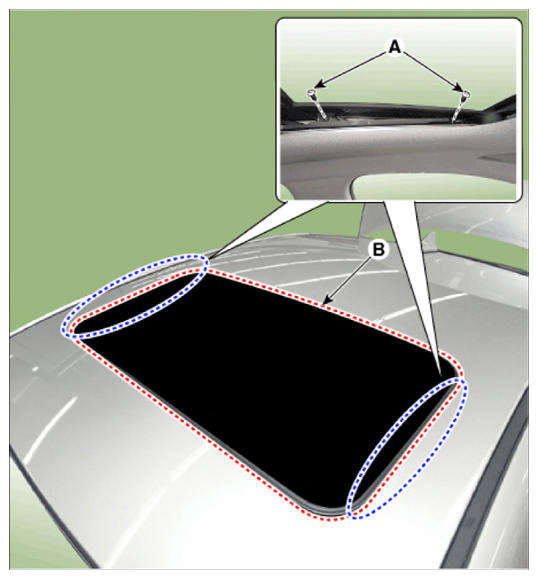

LEMON Manuals
: Even more car manuals for everyone: 1960-2025
Home
>>
Hyundai
>>
2022
>>
Elantra N Line, Standard Trans
>>
Repair and Diagnosis (Single Page)
>>
Body & Frame
>>
Sun Roof/T-Top/Convertible Top
>>
Sunroof - Replacement (Except HEV)
>>
Sunroof Glass
>>
Repair Procedures
>>
Replacement
Repair Procedures: Replacement
NOTE:
Put on glove to protect your hands.
Close the sunroof glass completely by pressing the sunroof switch.
Loosen the mounting screws (A) and remove the sunroof glass (B).
CAUTION:
Do not damage the roof panel.

Courtesy of HYUNDAI MOTOR AMERICA
To install, reverse the removal procedure.
Information
After replacing the movable glass adjust the alignment if needed.